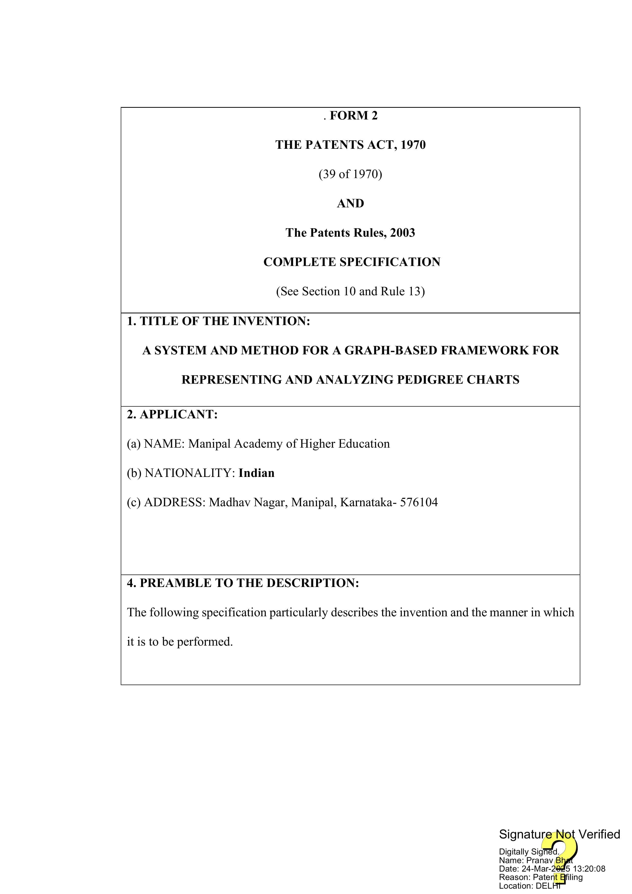

About Me
I am someone who deeply cares for my work. I have conducted research under several mentors, and I have always found my calling in the deep unknown. Most of the time, you can find me hunched over my laptop and sometimes shriek with excitement because of a t-test.
Publications

A System and Method for a Graph-Based Framework for Representing and Analyzing Pedigree Charts
Bhat, P. N.& Manoj, T.
Read Complete Specifications
Iterative Imputation System and Method for Predicting Missing Environmental, Social, and Governance (ESG) Data
Bhat, P. N
Contributors: Lopez, A., Huang, D., & Sahni, S.
Projects
Explainable AI in Chronic Kidney Disease
Manipal, India
October 2024 - Present
In this project, I explored the power of AI in diagnosing Chronic Kidney Disease (CKD) by evaluating 22 machine learning models across multiple datasets. Using advanced validation techniques, I identified the best-performing model with an impressive 99.5% accuracy. Beyond just performance, I applied Explainable AI (XAI) methods like SHAP and ELI5 to uncover which features were most critical in predictions, comparing them with established clinical markers. My work not only enhances AI transparency in healthcare but also provides insights that could refine CKD diagnosis and treatment. Currently, these findings are under review for publication.
Novel Pedigree Representation
Manipal, India
September 2024 - Present
Traditional pedigree charts have limitations when it comes to accurately representing family relationships and genetic traits. In this project, I developed a new way to structure pedigree data using a binodal mixed graph, solving challenges like birth order encoding and phenotype representation. To handle missing genetic data, I designed a probabilistic model that improves accuracy and reliability. A patent has been filed for this innovative data structure, and validation is currently underway. I'm also exploring Computer Vision and NLP for user-friendly interaction and considering Graph Neural Networks for deeper analysis of genetic traits.
Contact
Email: nakul1.mitmpl2023@learner.manipal.edu
GitHub: github.com/nakulbhat
LinkedIn: Nakul Bhat